건설재료시험기사 (2014-05-25 기출문제)
1과목: 콘크리트공학
1. 프리스트레스트 콘크리트 구조물이 철근콘크리트 구조물보다 유리한 점을 설명한 것중 옳지 않은 것은?
- 사용하중하에서는 균열이 발생하지 않도록 설계되기 때문에 내구성 및 수밀성 이 우수하다.
- 콘크리트의 전단면을 유효하게 이용할 수 있어 동일한 하중에 대해 부재 처짐 이 작다.
- 충격하중이나 반복하중에 대해 저항력이 크며 부재의 중량을 줄일 수 있어 장대교량에 유리하다.
- 강성이 크기 때문에 변형이 작고, 고온에 대한 저항력이 우수하다.
(정답률: 81%)

2. 콘크리트를 제조할 때 재료의 계량에 대한 설명으로 틀린 것은?
- 계량은 시방 배합에 의해 실시하여야 한다.
- 유효 흡수율의 시험에서 골재에 흡수시키는 시간은 실용상으로 보통 15~30분간의 흡수율을 유효 흡수율로 보아도 좋다.
- 골재의 경우 1회 계량분의 계량허용오차는 ±3%이다.
- 혼화재의 경우 1회 계량분의 계량허용오차는 ±2%이다.
(정답률: 79%)
3. 콘크리트 면의 마무리에서 평탄성의 표준값으로 적절하지 않은 것은?
- 마무리 두께가 7mm이상인 경우, 1m당 10mm 이하
- 마무리 두께가 7mm이하인 경우, 3m당 10mm 이하
- 양호한 평탄함이 필요한 경우, 3m당 10mm 이하
- 제물치장 마무리인 경우 3m당 5mm 이하
(정답률: 42%)
4. 콘크리트 타설 시 유의사항으로 잘못된 것은?
- 콘크리트 타설 도중 블리딩 수가 있을 경우 그 물을 제거하고 그 위에 콘크리트를 친다.
- 콘크리트 타설의 1층 높이는 진동기의 성능을 고려하여 1~1.5m 정도로 한다.
- 2층 이상으로 나누어 콘크리트를 타설하는 경우 아래층이 굳기 시작하기 전에 윗층의 콘크리트를 친다.
- 콘크리트의 자유낙하 높이가 너무 크면 콘크리트의 분리가 일어나므로 슈트, 펌프 배관 등의 배출구와 타설면까지의 높이는 1.5m 이하를 원칙으로 한다.
(정답률: 54%)
5. 다음 중 콘크리트의 작업성(workability)을 증진시키기 위한 방법으로서 적당하지 않은 것은?
- 입도나 입형이 좋은 골재를 사용한다.
- 일반적으로 콘크리트 반죽의 온도상승을 막아야 한다.
- 일정한 슬럼프의 범위에서 시멘트량을 줄인다.
- 혼화재료로서 AE제나 분산제를 사용한다.
(정답률: 73%)
6. 시방배합 결과 물 180kg/m3, 잔골재 650kg/m3, 굵은골재 1000kg/m3을 얻었다. 잔골재의 흡수율이 2%, 표면수율이 3%라고 하면 현장배합상의 단위 잔골재량은?
- 637.0kg/m3
- 656.5kg/m3
- 663.0kg/m3
- 669.5kg/m3
(정답률: 56%)
7. 다음 표와 같은 조건의 프리스트레스트 콘크리트에서 거푸집 내에서 허용되는 간장재의 배치오차 한계로서 옳은 것은?
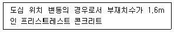
- 5mm
- 8mm
- 10mm
- 13mm
(정답률: 72%)
8. 일반콘크리트의 배합에서 물-결합재비에 대한 설명으로 틀린 것은?
- 제빙화학제가 사용되는 콘크리트의 물-결합재비는 55% 이하로 한다.
- 콘크리트의 수밀성을 기준으로 물-결합제비를 정할 경우 그 값은 50% 이하로 한다.
- 콘크리트의 탄산화 저항성을 고려하여 물-결합재비를 정할 경우 55% 이하로 한다.
- 물에 노출되었을 때 낮은 투수성이 요구 되는 콘크리트로서 내동해성을 기준으로 물-결합재비를 정할 경우 50% 이하로 한다.
(정답률: 67%)
9. 콘크리트 구조물의 내구성을 향상시키기 위해 유의하여야 할 사항 중 옳지 않은 것은?
- 배합시 단위수량을 될 수 있는 한 적게 사용한다.
- 충분한 피복두께를 확보한다.
- 가능한 한 비중이 작은 골재를 사용한다.
- 콜드조인트를 만들지 않는다.
(정답률: 75%)
10. 한중콘크리트의 동결융해에 대한 내구성 개선에 주로 사용되는 혼화제는?
- 포졸란
- 플라이애시
- 지연제
- AE제
(정답률: 54%)
11. 거푸집 및 동바리의 구조를 계산할 때 연직하중에 대한 설명으로 틀린 것은?
- 고정하중으로서 콘크리트의 단위중량은 철근의 중량을 포함하여 보통 콘크리트 인 경우 20kN/m3을 적용하여야 한다.
- 고정하중으로서 거푸집 하중은 최소 0.4kN/m3을 적용하여야 한다.
- 특수 거푸집이 사용된 경우에는 고정하중으로 그 실제의 중량을 적용하여 설계하여야 한다.
- 활하중은 구조물의 수평투영면적(연직 방향으로 투영시킨 수평면적)당 최소 2.5kN/이상으로 하여야 한다.
(정답률: 69%)
12. 섬유보강콘크리트에 관한 설명 중 틀린 것은?
- 섬유보강콘크리트는 콘크리트의 인장강도와 균열에 대한 저항성을 높인 콘크리트이다.
- 믹서는 섬유를 콘크리트 속에 균열하게 분산시킬수 있는 가경식 믹서를 사용하는 것을 원칙으로 한다.
- 시멘트계 복합재료용 섬유는 강섬유, 유리섬유, 탄소섬유 등의 무기계섬유와 아라미드섬유, 비닐론섬유 등의 유기계섬유로 분류한다.
- 섬유보강콘크리트에 사용되는 섬유는 섬유와 시멘트 결합재 사이의 부착성이 양호하고, 섬유의 인장강도가 커야 한다.
(정답률: 82%)
13. 콘크리트의 탄성계수에 대한 일반적인 설명으로 틀린 것은?
- 압축강도가 클수록 작다.
- 콘크리트의 탄성계수라 함은 할선탄성계수를 말한다.
- 응력-변형률 곡선에서 구할 수 있다.
- 콘크리트의 단위용적중량이 증가하면 탄성계수도 커진다.
(정답률: 61%)
14. 다음 중 프리스트레스트 콘크리트의 프리스트레스 감소의 원인이 아닌 것은?
- 강재의 릴랙세이션
- 콘크리트의 건조수축
- 콘크리트의 크리프
- 시스관의 크기
(정답률: 92%)
15. 다음은 경화한 콘크리트의 강도를 비파괴적으로 추정하는 방법을 설명한 것이다. 옳지 않은 것은?
- 초음파속도법 : 피측정물이 공진할 때의 동적특성치로 강도를 추정한다.
- 반발경도법 : 콘크리트 표면 타격 때 반발경도의 정도에서 강도를 추정한다.
- 복합법 : 반발경도법과 초음파속법을 병용하여 강도를 추정한다.
- 인발법 : 콘크리트 중에 묻힘 가력 Head를 지닌 Insert와 반력 Ring을 사용하여 원추 대상의 콘크리트 덩어리를 뽑아낼 때의 최대 내력에서 강도를 추정한다.
(정답률: 68%)
16. 압력법에 의한 굳지 않은 콘크리트의 공기량 시험(KS F2421)에 대한 설명으로 틀린 것은?
- 물을 붓지 않고 시험(무주수법)하는 경우 용기의 용적은 7L 정도 이상으로 한다.
- 물을 붓고 시험(주수법)하는 경우 용기의 용적은 적어도 5L로 한다.
- 인공 경량 골재와 같은 다공질 골재를 사용한 콘크리트에 대해서도 적용된다.
- 결과의 계산에서 콘크리트의 공기량은 겉보기 공기량에서 골재 수정계수를 뺀 값이다.
(정답률: 70%)
17. 외기온도가 25℃를 초과하고 지연제의 사용등 특별한 조치를 하지 않은 일반콘크리트에서 비비기에서 치기가 끝날 때까지 허용되는 최대시간은?
- 1.5시간
- 2시간
- 2.5시간
- 3시간
(정답률: 76%)
18. 콘크리트의 성능저하 원인의 하나인 알칼리 골재 반응에 관한 설명 중 틀린 것은?
- 알칼리골재 반응은 알칼리-실리카 반응, 알칼리-탄산염 반응, 알칼리-실리케이트 반응으로 분류한다.
- 알칼리골재 반응을 억제하기 위하여 단위시멘트량을 크게 하여야 한다.
- 알칼리골재 반응은 고로슬래그 미분말, 플라이애시 등의 포졸란 재료에 의해 억제된다.
- 알칼리골재 반응이 진행되면 무근콘크리트에서는 거북이 등과 같은 균열이 진행된다.
(정답률: 61%)
19. 콘크리트 다지기에 대한 설명으로 잘못된 것은?
- 내부진동기는 연직방향으로 일정한 간격으로 찔러 넣는다.
- 내부진동기는 콘크리트를 횡방향으로 이동시킬 목적으로 사용해서는 안 된다.
- 콘크리트를 타설한 직후에는 절대 거푸집의 외측에 충격을 주어서는 안 된다.
- 내부진동기를 하층의 콘크리트 속으로 0.1m 정도 찔러 넣는다.
(정답률: 85%)
20. 30회 이상의 실험실적으로부터 구한 콘크리트 압축강도의 표준편차가 5MPa이고, 설계기준 압축강도가 40MPa인 경우의 배합강도는?
- 46.7MPa
- 47.7MPa
- 48.2MPa
- 50.0MPa
(정답률: 70%)
2과목: 건설시공 및 관리
21. 성토사면의 토사 속에 고분자합성수지로 된 특수섬유와 모래를 혼합시킨 특수보강재를 살포하여 인공뿌리역할을 하도록 함으로써 사면보호기능을 하는 공법은?
- 코어프레임공법
- 소일시멘트공법
- 지오그리드공법
- 텍솔공법
(정답률: 59%)
22. RCD(reverse circulation drill)공법의 시공방법 설명 중 옳지 않은 것은?
- 물을 사용하여 약 0.2~0.3kg/cm2의 정수압으로 공벽을 안정시킨다.
- 기종에 따라 15˚ 정도의 경사 말뚝 시공이 가능하다.
- 케이싱 없이 굴삭이 가능한 공법이다.
- 순환수와 토사를 공외로 배출한 후 토사를 침전하고 상등수를 재활용하는 역순환 니수 굴삭공법이다.
(정답률: 65%)
23. 흙을 자연 상태로 쌓아 올렸을 때 급경사면은 점차로 붕괴하여 안정된 비탈면이 되는데 이때 형성되는 각도를 무엇이라 하는가?
- 흙의 자연각
- 흙의 경사각
- 흙의 안정각
- 흙의 안식각
(정답률: 78%)
24. 해저터널의 굴착에 특히 유효한 shield 공법의 적당한 지질은?
- 풍화암
- 연암
- 보통흙
- 연약지반
(정답률: 67%)
25. 말뚝의 지지력 산정에 있어서 말뚝과 지반 및 말뚝 머리의 탄성변형량을 고려한 공식은?
- Meyerhof 공식
- Sander 공식
- Hiley 공식
- Engineering News 공식
(정답률: 55%)
26. 터널 굴착공법 중 TBM공법의 특징에 대한 설명으로 틀린 것은?
- 단면 형상의 변경이 용이하다.
- 동바리공이 간단하다.
- 라이닝의 두께를 얇게 할 수 있다.
- 낙석이 적다.
(정답률: 61%)
27. 교량에서 좌우의 주형을 연결하여 구조물의 휨방향지지, 교량 단면 형상의 유지, 강성의 확보, 횡하중의 받침부로의 원활한 전달 등을 위해서 설치하는 것은?
- 교좌
- 바닥판
- 바닥틀
- 브레이싱
(정답률: 83%)
28. 특수 터널 공법 중 침매 공법의 특징에 대한 설명으로 틀린 것은?
- 단면형상이 비교적 자유롭고 큰 단면으로 만들 수 있다.
- 육상에서 터널 본체를 제작하므로, 시공 기간이 짧아진다.
- 시공 시 유속으로 인한 영향이 없으므로, 유속이 빠른 협소한 수로 등에 특히 유리하다.
- 수중에 설치하므로 부력작용으로 자중이 작아 비교적 쉽게 작업할 수 있다.
(정답률: 75%)
29. 폭우 시 옹벽 배면의 흙은 다량의 물을 함유하게 되는데 뒷채움 토사에 배수 시설이 불량할 경우 침투수가 옹벽에 미치는 영향에 대한 설명으로 틀린 것은?
- 포화 또는 부분포화에 의한 흙의 무게증가
- 활동면에서의 양압력 발생
- 수동저항(passive resistance)의 증가
- 옹벽저면에 대한 양압력 발생으로 안정성 감소
(정답률: 79%)
30. 댐 시공 시 건작업(dry-work)을 위하여 물을 배제하는 임시 물막이 공법 중 강널말뚝(sheet pile)을 원통형으로 박고 그 속에 토사를 채워 높은 안정성과 깊은 수심의 임시물막이로 많이 사용되는 공법은?
- 외겹 시트파일(sheet pile) 가체절공
- 두겹 널말뚝식 가체절공
- 셀식(cell type) 가체절공
- 흙댐식 가체절공
(정답률: 52%)
31. 샌드 드레인 공법에서 Sand pile을 정삼각형 배치할 경우 모래기둥의 간격은?(단, Sand pile의 유효지름은 40cm이다.)
- 35.3cm
- 36.9cm
- 38.1cm
- 39.2cm
(정답률: 73%)
32. 8t 덤프 트럭으로 보통 토사를 운반하고자 할 때, 적재장비를 버킷용량 2.0m3인 백호를 사용하는 경우 백호의 적재횟수는? (단, 흙의 γ=1.5t/m3, 토량변화율(L)=1.2, 버킷계수(K)=0.85, 백호의 사이클시간(Cms)=25s, 작업효율(E)=0.75)
- 2회
- 4회
- 6회
- 8회
(정답률: 65%)
33. 사이폰 관거(syphon drain)에 대한 다음 설명 중 옳지 않은 것은?
- 암거가 앞뒤의 수로바닥에 비하여 대단히 낮은 위치에 축조된다.
- 일종의 집수암거로 주로 하천의 복류수를 이용하기 위하여 쓰인다.
- 용수, 배수, 운하 등 성질이 다른 수로가 교차하지만 합류시킬 수 없을 때 사용한다.
- 다른 수로 혹은 노선과 교차할 때 사용된다.
(정답률: 71%)
34. 보조기층의 보호 및 수분의 모관 상승을 차단하고 아스팔트 혼합물과의 접착성을 향상시키기 위하여 실시하는 것은?
- 프라임 코트(prime coat)
- 실 코트(seal coat)
- 택 코트(tack coat)
- 피치(pitch)
(정답률: 81%)
35.
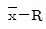
관리도에서 필요하지 않은 관리선은?- UCL
- PCL
- LCL
- CL
(정답률: 62%)
36. 디퍼 준설선(Dipper Dredger)의 특징으로 틀린 것은?
- 암석이나 굳은 토질에도 적합하다.
- 작업장소가 넓지 않아도 된다.
- 준설비가 비교적 작고, 연속식에 비하여 작업능률이 뛰어나다.
- 기계의 고장이 비교적 적다.
(정답률: 46%)
37. 다음의 연약지반 처리 공법 중에서 일시적인 공법이 아닌 것은?
- 약액주입공법
- 동결공법
- 대기압공법
- 웰포인트 공법
(정답률: 63%)
38. 다음 공정표에 대한 설명으로 가장 적합한 것은?
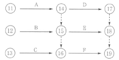
- D는 A,B가 완료하여야 시작할 수 있다.
- F는 A,B,C가 완료하여야 시작할 수 있다.
- E는 A만 완료하면 시작할 수 있다.
- E는 A,D가 완료하여야 시작할 수 있다.
(정답률: 71%)
39. 점성토에서 발생하는 히빙의 방지대책으로 틀린 것은?
- 널말뚝의 근입 깊이를 짧게 한다.
- 표토를 제거하거나 배면의 배수 처리로 하중을 작게 한다.
- 연약지반을 개량한다.
- 부분굴착 및 트렌치 컷 공법을 적용한다.
(정답률: 85%)
40. 케이슨을 침하시킬 때 유의사항으로 틀린 것은?
- 침하 시 초기 3m까지는 안정하므로 경사이동의 조정이 용이하다.
- 케이슨은 정확한 위치의 확보가 중요하다.
- 토질에 따라 케이슨의 침하 속도가 다르므로 사전 조사가 중요하다.
- 편심이 생기지 않도록 주의해야 한다.
(정답률: 84%)
3과목: 건설재료 및 시험
41. 콘크리트용 골재(骨材)에 요구되는 성질 중 옳지 않은 것은?
- 물리적으로 안정하고 내구성이 클 것
- 화학적으로 안정할 것
- 시멘트 풀과의 부착력이 큰 표면조직을 가질 것
- 골재의 입도 크기가 균일할 것
(정답률: 69%)
42. 시멘트의 분말도와 물리적 성질에 관한 설명 중 틀린 것은?.
- 시멘트의 분말도는 높을수록 콘크리트의 초기 강도가 크다.
- 분말도가 높은 시멘트는 작업이 용이한 콘크리트를 얻을 수 있다.
- 분말도가 높으면 수축률이 커지기 쉽고 콘크리트에 틈이 생길 가능성이 많다.
- 분말도가 높으면 내구성이 따라서 증가한다.
(정답률: 48%)
43. 암석은 그 성인(成因)에 따라 대별되는데 편마암, 대리석 등은 어느 암으로 분류되는가?
- 수성암
- 화성암
- 변성암
- 석회질암
(정답률: 70%)
44. 다음 골재의 함수상태를 표시한 것 중 틀린 것은?
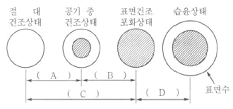
- A : 기건 함수량
- B : 유효 흡수량
- C : 함수량
- D : 표면수량
(정답률: 64%)
45. 경량골재 콘크리트에 사용되는 경량골재에 대한 설명 중 틀린 것은?
- 깨끗하고, 강하며 내구적이어야 하고 적당한 입도 및 단위질량을 가져야 한다.
- 골재의 씻기 시험에 의하여 손실되는 양은 10%이하로 하여야 한다.
- 굵은 골재의 최대 치수는 원칙적으로 25mm로 한다.
- 경량골재 중 잔골재는 건조된 상태의 최대 단위질량이 1,100kg/m3이어야 한다.
(정답률: 49%)
46. 시멘트 제조 공정 중 소성이 불충분한 경우 발생하는 현상이 아닌 것은?
- 수화작용이 빨리 일어나 시멘트의 조기 강도가 커진다.
- 시멘트의 밀도가 작아진다.
- 시멘트의 안정성이 저하되고 장기강도가 저하된다.
- 시멘트의 주원료인 석회성분의 분리현상이 발생된다.
(정답률: 80%)
47. 어떤 목재의 함수율을 시험한 결과 건조 전 목재의 중량은 165g이고, 비중이 1.5일 때 함수율은 얼마인가?(단, 목재의 절대 건조 무게는 142g이었다.)
- 13.9%
- 15.2%
- 16.2%
- 17.2%
(정답률: 46%)
48. 다음 토목섬유 중 폴리머를 판상으로 압축시키면서 격자모양의 형태로 구멍을 내어 만든 후 여러 가지 모양으로 늘린 것으로 연약지반 처리 및 지반 보강용으로 사용되는 것은?
- 지오텍스타일(geotextile)
- 지오그리드(geogrids)
- 지오네트(geonets)
- 웨빙(webbings)
(정답률: 77%)
49. 콘크리트용 골재의 성질 중 굵은골재 최대치수가 콘크리트의 품질에 미치는 영향에 대한 설명 중 틀린 것은?
- 굵은골재 최대치수가 지나치게 크면 콘크리트의 혼합 및 취급이 어렵고 재료분리가 일어난다.
- 물-시멘트비가 일정한 경우에는 굵은 골재 최대치수가 커짐에 따라 압축강도는 증가한다.
- 굵은골재 최대치수가 클수록 콘크리트의 단위수량 및 단위시멘트량을 감소시킬 수 있어 경제적이다.
- 콘크리트의 압축강도가 40MPa 이상이면 굵은골재 최대치수를 크게 할수록 단위 시멘트량이 증가한다.
(정답률: 42%)
50. 콘크리트용 혼화재료에 의한 포졸란 반응이 콘크리트의 성질에 미치는 영향에 대한 설명으로 틀린 것은?
- 포졸란 반응은 시멘트의 수화반응에 비해 늦어 콘크리트의 초기수화열이 저감된다.
- 포졸란 반응에 의해 모세관 공극의 효과적으로 채워져 콘크리트의 수밀성이 향상된다.
- 포졸란 반응에 의해 염분의 침투를 막을 수 있어 콘크리트의 내염성이 향상된다.
- 포졸란 반응은 시멘트에서 생성되는 수산화칼슘을 소모하기 때문에 콘크리트의 중성화 억제효과가 있다.
(정답률: 47%)
51. 최 근 아스팔트 품질에 있어 공용성 등급(Performance Grade)을 KS등에 도입하여 적용하고 있다. 다음 표와 같은 표기에서 “76”의 의미로 옳은 것은?
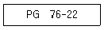
- 7일간의 평균 최고 포장 설계 온도
- 22일간의 평균 최고 포장 설계 온도
- 최저 포장 설계 온도
- 연화점
(정답률: 68%)
52. 다음 표에서 설명하는 아스팔트의 성질은?
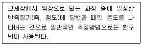
- 연화점
- 인화점
- 신도
- 연소점
(정답률: 75%)
53. 콘크리트 내부에 미세 독립기포를 형성하여 워커빌리티 및 동결융해저항성을 높이기 위하여 사용하는 혼화제는?
- 고성능감수제
- 팽창제
- 발포제
- AE제
(정답률: 67%)
54. 방청제를 사용한 콘크리트에서 방청제의 작용에 의한 방식방법에 대한 설명으로 틀린 것은?
- 콘크리트 중의 철근표면의 부동태피막을 보강하는 방법
- 콘크리트 중의 이산화탄소를 소비하여 철근에 도달하지 않도록 하는 방법
- 콘크리트 중의 염소이온을 결합하여 고정하는 방법
- 콘크리트의 내부를 치밀하게 하여 부식성 물질의 침투를 막는 방법
(정답률: 48%)
55. 목재의 특징에 대한 설명 중 틀린 것은?
- 함수율에 따라 수축팽창이 크다.
- 가연성이 있어 내화성이 작다.
- 온도에 의한 수축, 팽창이 크다.
- 부식이 쉽고 충해를 입는다.
(정답률: 67%)
56. 대폭파와 수중폭파 등 동시 폭파할 경우 뇌관 대신에 사용하는 기폭용품은?
- 도화선
- 첨장제
- 테도릴
- 도폭선
(정답률: 80%)
57. 콘크리트의 건조수축균열을 방지하고 화학적 프리스트레스를 도입하는 데 사용되는 시멘트는?
- 팽창시멘트
- 알루미나시멘트
- 고로슬래그시멘트
- 초속경시멘트
(정답률: 48%)
58. 다음 중 아스팔트의 침입도에 대한 설명으로 틀린 것은?
- 온도가 상승하면 침입도는 감소한다.
- 침입도지수란 온도에 대한 침입도의 변화를 나타내는 지수이다.
- 스트레이트 아스팔트가 블론 아스팔트 보다 침입도가 크다.
- 침입도는 아스팔트의 반죽질기를 물리적으로 나타내는 것이다.
(정답률: 57%)
59. KS F 2530에 규정되어 있는 경석의 압축강도 기준은?
- 60MPa 이상
- 50MPa 이상
- 40MPa 이상
- 30MPa 이상
(정답률: 66%)
60. 이형철근의 인장시험 데이터가 다음과 같을 때 파단연신율(%)은?
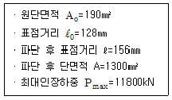
- 19.85
- 21.88
- 23.85
- 25.88
(정답률: 54%)
4과목: 토질 및 기초
61. 그림에서 정사각형 독립기초 2.5m×2.5m가 실트질 모래 위에 시공되었다. 이때 근입깊이가 1.50m인 경우 허용지지력은 약 얼마인가? (단, Nc=35, Nγ=Nq=20, 안전율은 3)
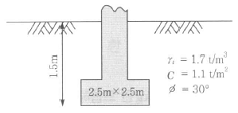
- 25t/m2
- 30t/m2
- 35t/m2
- 45t/m2
(정답률: 28%)
62. 연약점성토층을 관통하여 철근콘크리트 파일을 박았을 때 부마찰력(Negative friction)은? (단, 이때 지반의 일축압축강도 qu=2t/m2, 파일직경 D=50cm, 관입깊이 ℓ=10m이다.)
- 15.71t
- 18.53t
- 20.82t
- 24.24t
(정답률: 49%)
63. 단위중량(γt)=1.9t/m3, 내부마찰각(ø=30°, 정지토압계수(Ko)=0.5인 균질한 사질토지반이 있다. 지하수위면이 지표면 아래 2m지점에 있고 지하수위면 아래의 단위중량(γsat)=2.0t/m3이다. 지표면 아래 4m지점에서 지반내 응력에 대한 다음 설명 중 틀린 것은?
- 간극수압(u)은 2.0t/m2이다.
- 연직응력(σu)은 8.0t/m2이다.
- 유효연직응력(σu′은 5.8t/m2이다.
- 유효수평응력(σh′)은 2.9t/m2이다.
(정답률: 36%)
64. 그림과 같이 6m 두께의 모래층 밑에 2m 두께의 점토층이 존재한다. 지하수면은 지표아래 2m지점에 존재한다. 이때, 지표면에 △P=5.0t/m2의 등분포하중이 작용하여 상당한 시간이 경과한 후, 점토층의 중간높이 A점에 피에조미터를 세워 수두를 측정한 결과, h=4.0m로 나타났다면 A점의 압밀도는?
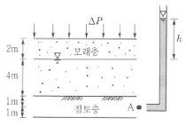
- 20%
- 30%
- 50%
- 80%
(정답률: 36%)
65. 정규압밀점토에 대하여 구속응력 1kg/cm2 압밀배수 시험한 결과 파괴 시 축차응력이 2kg/cm2이었다. 이 흙의 내부마찰각은?
- 20˚
- 25˚
- 30˚
- 40˚
(정답률: 48%)
66. Terzaghi의 1차 압밀에 대한 설명으로 틀린 것은?
- 압밀방정식은 점토 내에 발생하는 과잉 간극수압의 변화를 시간과 배수거리에 따라 나타낸 것이다.
- 압밀방정식을 풀면 압밀도를 시간계수의 함수로 나타낼 수 있다.
- 평균압밀도는 시간에 따른 압밀침하량을 최종압밀침하량으로 나누면 구할 수 있다.
- 하중이 증가하면 압밀침하량이 증가하고 압밀도도 증가한다.
(정답률: 35%)
67. Jaky의 정지토압계수를 구하는 공식 Ko=1-sinø가 가장 잘 성립하는 토질은?
- 과입말점토
- 정규압밀점토
- 사질토
- 풍화토
(정답률: 52%)
68. 무게 320kg인 드롭해머(drop hammer)로 2m의 높이에서 말뚝을 때려 박았더니 침하량이 2cm이었다. Sander의 공식을 사용할 때 이 말뚝의 허용지지력은?
- 1,000kg
- 2,000kg
- 3,000kg
- 4,000kg
(정답률: 37%)
69. 다음 그림에서 분사현상에 대한 안전율을 구하면?
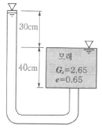
- 1.01
- 1.33
- 1.66
- 2.01
(정답률: 47%)
70. ø=33°인 사질토에 25°경사의 사면을 조성하려고 한다. 이 비탈면의 지표까지 포화되었을 때 안전율을 계산하면? (단, 사면 흙의 γsat=1.8t/m3)
- 0.62
- 0.70
- 1.12
- 1.41
(정답률: 40%)
71. 다음은 전단시험을 한 응력경로이다. 어느 경우인가?
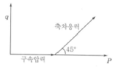
- 초기단계의 최대주응력과 최소주응력이 같은 상태에서 시행한 삼축압축시험의 전응력 경로이다.
- 초기단계의 최대주응력과 최소주응력이 같은 상태에서 시행한 일축압축시험의 전응력 경로이다.
- 초기단계의 최대주응력과 최소주응력이 같은 상태에서 Ko=0.5인 조건에서 시행한 삼축압축시험의 전응력 경로이다.
- 초기단계의 최대주응력과 최소주응력이 같은 상태에서 Ko=0.7인 조건에서 시행한 일축압축시험의 전응력 경로이다.
(정답률: 50%)
72. 다음 그림에서 투수계수 K=4.8×10-3㎝/sec일 때 Darcy유출속도 v와 실제 물의 속도(침투속도) vs는?
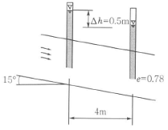
- v=3.4×10-4㎝/sec, vs=5.6×10-4㎝/sec
- v=3.4×10-4㎝/sec, vs=9.4×10-4㎝/sec
- v=5.8×10-4㎝/sec, vs=10.8×10-4㎝/sec
- v=5.8×10-4㎝/sec, vs=13.2×10-4㎝/sec
(정답률: 46%)
73. 모래지층 사이에 두께 6m의 점토층이 있다. 이 점토의 토질 실험결과가 다음 표와 같을 때, 이 점토층의 90%압밀을 요하는 시간은 약 얼마인가? (단, 1년은 365일로 계산)
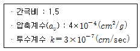
- 52.2년
- 12.9년
- 5.22년
- 1.29년
(정답률: 25%)
74. 점토광물에서 점토입자의 동형치환(同形置換)의 결과로 나타나는 현상은?
- 점토입자의 모양이 변화되면서 특성도 변하게 된다.
- 점토입자가 음(-)으로 대전된다.
- 점토입자의 풍화가 빨리 진행된다.
- 점토입자의 화학성분이 변화되었으므로 다른 물질로 변한다.
(정답률: 50%)
75. 흙의 내부마찰각(ø)은 20˚, 점착력(c)이 2.4t/m2이고, 단위중량(γt)은 1.93t/m3인 사면의 경사각이 45˚일 때 임계높이는 약 얼마인가? (단, 안정수 m=0.06)
- 15m
- 18m
- 21m
- 24m
(정답률: 37%)
76. 토립자가 둥글고 입도분포가 나쁜 모래 지반에서 표준관입시험을 한 결과 N치는 10이었다. 이 모래의 내부 마찰각을 Dunham의 공식으로 구하면?
- 21°
- 26°
- 31°
- 36°
(정답률: 60%)
77. 다음은 주요한 Sounding(사운딩)의 종류를 나타낸 것이다. 이 가운데 사질토에 가장 적합하고 점성토에서도 쓰이는 조사법은?
- 더치 콘(Dutch Cone)관입시험기
- 베인 시험기(Vane tester)
- 표준 관입시험기
- 이스키미터(Iskymeter)
(정답률: 46%)
78. 통일분류법에 의한 분류기호와 흙의 성질을 표현한 것으로 틀린 것은?
- GP-입도분포가 불량한 자갈
- GC-점토 섞인 자갈
- CL-소성이 큰 무기질 점토
- SM-실트 섞인 모래
(정답률: 53%)
79. 모래지반에 30cm×30cm의 재하판으로 재하실험을 한 결과 10t/m2의 극한지지력을 얻었다. 4m×4m의 기초를 설치할 때 기대되는 극한지지력은?
- 10t/m2
- 100t/m2
- 133t/m2
- 154t/m2
(정답률: 58%)
80. 흙의 다짐에 관한 설명으로 틀린 것은?
- 다짐에너지가 클수록 최대건조단위중량(γdmax)은 커진다.
- 다짐에너지가 클수록 최적함수비(Wopt)는 커진다.
- 점토를 최적함수비(Wopt)보다 작은 함수비로 다지면 면모구조를 갖는다.
- 투수계수는 최적함수비(Wopt)근처에서 의 최소값을 나타낸다.
(정답률: 52%)
프리스트레스트 콘크리트 구조물은 철근콘크리트 구조물과 달리, 철근이나 강선 등의 인장재를 콘크리트에 미리 인장하고 고정시킨 후 콘크리트를 주입하여 만들어진 구조물입니다. 이러한 방식으로 만들어진 프리스트레스트 콘크리트 구조물은 철근콘크리트 구조물보다 강성이 크기 때문에 변형이 작고, 고온에 대한 저항력이 우수합니다. 따라서 지진이나 폭풍 등의 자연재해에 강하며, 높은 온도에서도 변형이 적어 안정적인 구조물로 사용될 수 있습니다.